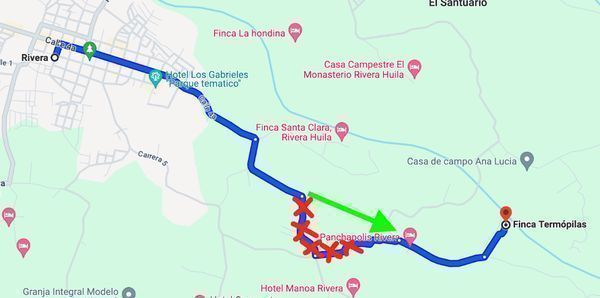
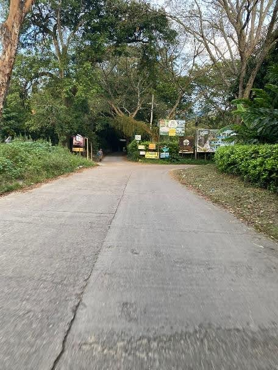
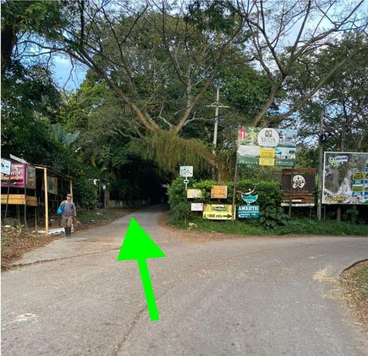

Cómo llegar a Finca Termópilas en Rivera, Huila
Finca Termópilas está en el km 3,3 de la vía a Las Juntas, en la vereda Termópilas del municipio de Rivera (Huila), a unos 3,3 km del centro del pueblo. Rivera queda a unos 20 minutos de Neiva por carretera.
- Dirección: Km 3,3 vía Las Juntas, vereda Termópilas, Rivera, Huila, Colombia
- Desde Neiva: alrededor de 30 minutos hasta la finca
- Parqueadero: dentro de la finca, sin costo
Desde Neiva y el aeropuerto Benito Salas
El aeropuerto más cercano es el Benito Salas, en Neiva. Desde Neiva se llega por carretera al centro de Rivera en unos 20 minutos, y desde allí son 3,3 km más por la vía a Las Juntas hasta la finca. Puedes venir en carro particular o en taxi, o tomar transporte público hasta Rivera y seguir en motocarro (más abajo están los contactos).
Desde Bogotá
Puedes volar a Neiva y seguir por carretera hasta Rivera, o viajar por tierra hasta Neiva en carro o en bus intermunicipal. Por carretera, el viaje entre Bogotá y Neiva suele tomar varias horas, según el tráfico y el estado de la vía, así que conviene salir temprano.
Los últimos kilómetros
El tramo final es por una vía rural. Sigue la ruta de esta página y no tomes el desvío que sugiere Google Maps, que termina en un callejón sin salida: abajo verás la ruta correcta marcada en verde, fotos del cruce de referencia y un video del recorrido. Si llegas de noche o con lluvia, maneja con precaución.
Clima
La finca está a unos 1.000 metros sobre el nivel del mar, con clima cálido de día y más fresco en la noche. Trae ropa ligera, protector solar o sombrero, repelente para mosquitos y algo de abrigo para la noche.
Qué hacer cerca, en Rivera
- Termales de Rivera: Rivera es conocido por sus aguas termales, que brotan entre 35 °C y 40 °C. Hay varios complejos, como Termales Los Ángeles, Termales San Francisco, Termales Confamiliar y los Termales Municipales.
- Gastronomía: en el pueblo hay restaurantes de comida típica huilense, parrilla y más. Mira nuestra guía de lugares para comer en Rivera.
- En la finca: el tour de vino y cacao, la piscina y el Río Frío; y si te quedas a dormir, nuestras habitaciones y cabañas.
- Más lejos en el Huila: el Desierto de la Tatacoa, la Mano del Gigante o San Agustín. Ideas en destinos imperdibles del Huila.
¿Tienes más preguntas? Revisa nuestras preguntas frecuentes.
Video de ayuda
Ruta desde el centro de Rivera, Huila
Te pasamos la ruta desde el centro de Rivera, Huila.
¡IMPORTANTE! Google Maps muestra un camino que te marcamos en ROJO y que lleva a un callejón sin salida; NO lo vayas a tomar.
El camino correcto está marcado con la flecha VERDE:

Punto de referencia del cruce:


Ubicación en Google Maps
Puedes encontrarnos directamente en Google Maps: